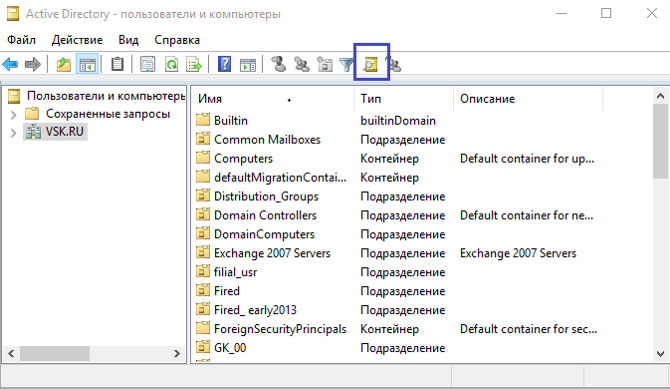

помощью можно управлять группами доступа к различным системам, учетными записями и их статусом.

Кликните на изображение для его увеличения
На данном скриншоте изображен интерфейс AD. Для внедрения пользователя в группу необходимо найти ее в прилагаемом поле и внести логин в список доступа.